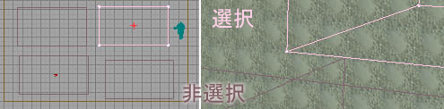
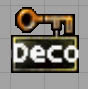
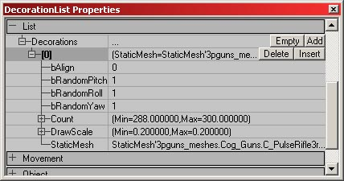
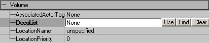
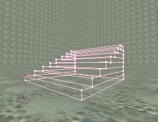

UDN
Search public documentation:
VolumesTutorialJP
English Translation
한국어
Interested in the Unreal Engine?
Visit the Unreal Technology site.
Looking for jobs and company info?
Check out the Epic games site.
Questions about support via UDN?
Contact the UDN Staff
한국어
Interested in the Unreal Engine?
Visit the Unreal Technology site.
Looking for jobs and company info?
Check out the Epic games site.
Questions about support via UDN?
Contact the UDN Staff
ボリューム
ドキュメントの概要: 様々なボリューム タイプを、セットおよび使用するためのリファレンス ドキュメントの変更ログ: Michiel Hendriks により最終変更｡いくつかのv3323を変更｡その前回はTom Lin (DemiurgeStudios)により変更｡文書を適度な分量に分割｡原作者Lode Vandevenne (UdnStaff)。ボリューム
ボリュームとは非表示のブラシで、アクタの出入りを感知します｡ボリューム内部にいる時は、特別のプロパティをセットして使用できます（水タイプのフリクション、痛みを感じるエリアなど）。ボリュームにはいくつかのタイプがあり、大部分のサブセットにはそれぞれ個別に文書が用意されているか、より適切な他のエリアで説明されています｡これらのタイプの詳細については、PhysicsVolume?(物理ボリューム)およびレベル最適化の文書をお読みください｡この文書では、ほぼすべてのボリュームに共通する、より一般的なプロパティについて説明します｡ボリュームの追加
ボリュームを追加するには、赤のブラシにシェイプとロケーションを与え、左のツールバーにある[Volume]（ボリューム） ボタンを押します｡ 追加するボリュームのリストが表示されます｡VolumeとPhysicsVolumeはマザークラスで、他はPhysicsVolumeのサブクラスです｡この内のいくつかはスクリプトに特別な機能が追加されており、いくつかは単にPhysicsVolumeの修正されたプロパティです｡これらのタイプのPhysicsVolumeについての詳細については、PhysicsVolumes の文書をお読みください｡
ボタンを押します｡ 追加するボリュームのリストが表示されます｡VolumeとPhysicsVolumeはマザークラスで、他はPhysicsVolumeのサブクラスです｡この内のいくつかはスクリプトに特別な機能が追加されており、いくつかは単にPhysicsVolumeの修正されたプロパティです｡これらのタイプのPhysicsVolumeについての詳細については、PhysicsVolumes の文書をお読みください｡
 エディタでボリュームを追加して赤いブラシを移動すると、ブラシはピンク（選択）または紫（非選択）に見えます｡
エディタでボリュームを追加して赤いブラシを移動すると、ブラシはピンク（選択）または紫（非選択）に見えます｡

ボリュームを追加したら、自由に回転、サイズ変更、移動できます｡ボリュームはゲーム中は非表示なので、テスト中はボリュームの位置をジオメトリで代用しておくとよいでしょう。ボリューム
PhysicsVolumeのマザークラスです｡これを使用するのは唯一、ロケーションがPhysicsVolumeのプロパティを必要としない時、これにロケーション名を与える場合です｡AssociatedActorTag(関連したアクタ タグ)
特定のアクタのタグにこの設定を行うと、ボリュームがタッチした際に、アクタにTouch(タッチ) と UnTouch(アンタッチ)のイベントが呼ばれます｡プログラマーは、この点に注意してください｡DecoList(デコリスト)
ボリュームを利用して、DecorationList(デコレーション リスト) アクタの境界を定義します｡Unreal エディットの基本を知っていれば、おおむね簡単にできます｡ まず始めに、アクタ リストで、Actor > Keypoint > DecorationList へ行きます｡自分のレベルにDecorationListを追加します｡
DecorationListのプロパティはとても分かりやすくなっています｡
- bAlign: 静的メッシュを、その下のフロアに調整します｡フロアが傾いている場合、デコレーション メッシュもそれに従って傾きます｡
- bRandomPitch: ランダム ピッチのための正/誤トグルです。
- bRandomRoll: ランダム ロールのための正/誤トグルです。
- bRandomYaw: ランダム ヨーのための正/誤トグルです。
- Count: ボリューム内の静的メッシュ デコレーションの量を、最小・最大の値で決定します｡
- DrawScale: ボリューム内の静的メッシュ デコレーションのサイズを、最小・最大の値で決定します｡
- StaticMesh: デコレーション メッシュに使うメッシュを選びます｡

次に、ボリューム プロパティ内でDecoList（デコリスト）の行を選択します｡このフィールドに入力するには、[Use]（使う）ボタンではなく、[Find]（検索）ボタンを使います｡[Use] ボタンの上でクリックし、DecorationListのアイコンをクリックします｡Rebuild(リビルド)します｡すべてが正しく行われれば、レベルをロードした際にボリュームがメッシュで満たされるはずです｡ 満たされたボリュームは、プレイナーでなくても、プレーン上にすべてのメッシュを生成します｡メッシュはボリュームの垂直点の中心でスポーンします。
満たされたボリュームは、プレイナーでなくても、プレーン上にすべてのメッシュを生成します｡メッシュはボリュームの垂直点の中心でスポーンします。
LocationName(ロケーション名)
すべてのボリュームに、LocationNameを付けられます｡Volume Properties --> Volume --> LocationName で入力します｡ このLocationNameは、プレーヤがこのボリューム内で自分のチームにメッセージを送る際、プレーヤの名前が隣に表示されるように使えます｡こうすると、チームのメンバーがこのプレーヤの居場所を知ることができます｡もしマップ内のエリアに名前が欲しく、しかしこのエリアには物理プロパティが必要でない場合、普通のボリューム クラスを使用します｡
このLocationNameは、プレーヤがこのボリューム内で自分のチームにメッセージを送る際、プレーヤの名前が隣に表示されるように使えます｡こうすると、チームのメンバーがこのプレーヤの居場所を知ることができます｡もしマップ内のエリアに名前が欲しく、しかしこのエリアには物理プロパティが必要でない場合、普通のボリューム クラスを使用します｡
LocationPriority(ロケーション優先順位)
アクタが一つ以上のボリューム内にいる場合、アクタのボリュームは一番優先順位の高いボリュームにセットされます｡この変数を扱う際、いくつかの注意事項があります｡第一に、一番高い番号の優先順位が一番高くなります｡すなわち、３のLocationPriorityは、1のそれよりも高くなります｡第二に、これはアクタが入るべきボリュームにのみ影響するもので、ボリュームの持つ効力には影響しません｡例えば、２つの溶岩ボリュームがあるとします。一つの内部にもう一つがある場合、プレーヤが内包される溶岩ボリュームの内部にいても、両方のボリュームからのダメージがプレーヤに影響します｡コードではプレーヤはLavaInterior（溶岩内部）におり、LavaExterior（溶岩外部）でなくともです。BlockingVolume
BlockingVolumeとは、単に非表示の、ブロックするブラシのことです｡BlockingVolumeはプレーヤや他のアクタをブロックしますが、ZeroExtentTraces(ゼロ エクステント トレース)（発射物、ロケットなど）は通過させます｡プレーヤはこの透明の階段を上がれますが、これを打ち抜くこともできます：
BlockingVolumeは、StaticMesh(静的メッシュ)よりも早く優れた衝突を提供します｡このボリュームはBSPにマップを追加しますが、他のBSPをレベルから切り離しません｡また、レンダーされていないため、BSPホールは作成できません｡ StaticMeshの周りでBlockingVolumeを使うには、単にBlockingVolumeを周りに追加し、StaticMeshおよび衝突のプロパティで、BlockNonZeroExtendTraces をFalse (誤)にセットします｡これによりStaticMeshは弾丸を止めますが、プレーヤは歩いて通過することができます｡プレーヤは代わりに、BlockingVolume によってブロックされます｡

bClampFluid
True にセットされていると、ブロッキング ボリュームは、静的メッシュでの簡単な衝突モデル同様、フルイドのサーフェスで衝突のモデルとして使われます｡
bClassBlocker
これがTrue にセットされていると、ブロッキング ボリュームは特定のクラス（｢ブロッキング クラス｣の項で定義）のみをブロックします｡リスト内のクラスはブロックされますが、その他はされません（v3323およびそれ以上）。